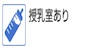
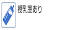
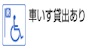
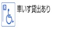

新宿御苑
(しんじゅくぎょえん)
03-3350-0151
03-3350-1372
shinjuku@env.go.jp
Shinjuku Gyoen "กระทรวงสิ่งแวดล้อม"
9:00~16:00
(16:30 ปิดตัวลง)
※มันฟื้นฟูเรือนกระจกภายใต้การก่อสร้าง
ทุกวันจันทร์
(ในวันถัดไปในกรณีของเทศกาล)、
สิ้นปีและวันหยุดปีใหม่
(29 - 3 มกราคมธันวาคม)
ชั่วโมงครึ่งประมาณ 1 ชั่วโมงเพื่อ
¥ 200 อายุ 15 ปีหรือมากกว่า
ประถมศึกษาและนักเรียนมัธยมศึกษาตอนต้น¥ 50,
ทารกฟรี
การใช้บัตร / ไม่สามารถใช้ได้
และผู้คนที่มีความพิการติดต่อ
เข้ารับการรักษาของคนคนหนึ่งของผู้ดูแลที่เป็นอิสระ
(ไม่คัดลอก)
ส่วนลดอาวุโสไม่ได้เป็น
สายพับ 4 ปริมณฑลเหตุผล "การ์เด้น" ออกจากกระบวนการไปที่วาเซดะต่อถนน Gyoen ตะวันออก เปิดซ้าย "Yotsuya-Chome" สี่แยกเลี้ยวซ้ายในชินจูกุเป็น "Chome ชินจูกุ" หน้าสี่แยก (Okido) ที่จอดรถ
ประมาณ 5 นาทีเดินไปเดินประมาณ 5 นาทีจาก JR Sobu "Sendagaya" จากสถานีทางออก 1 โตเกียวเมโทร Marunouchi สาย Shinjuku Gyoen สถานีแม่
ทันทีที่รถบัสเราชินจูกุจาก "Shinjuku Gyoen" ป้ายรถเมล์
ห้า
¥ 2000 ถึง 3 ชั่วโมง, 30 ต่อ¥ 400 หลังจากนั้น
200 หน่วย
¥ 500 ถึง 3 ชั่วโมง, ¥ 100 ทุก 30 นาทีหลังจากนั้น
มันไม่สามารถลิขสิทธิ์ เวลา (19:00 GR) 8:00-20:00
นักเรียน
กลุ่ม
คู่
ครอบครัว
ระดับอาวุโส
สีเงิน
ทุนที่กำหนดอาคารประวัติศาสตร์
สถานที่สำคัญทางวัฒนธรรมอาคารสไตล์ยุโรปเก่า Gokyu-sho
อาคารประวัติศาสตร์โตเกียวเก่า Goryo-เตย
บริการอื่น ๆ
| โปรแกรมประสบการณ์ | ใช่
มันเป็นห้องเรียนธรรมชาติที่มีเป้าหมายผู้ปกครองห้องเรียนป่าธรรมชาติและลูกของแม่และเด็ก กรุณาเยี่ยมชมเว็บไซต์ของเราสำหรับข้อมูลเพิ่มเติม |
คู่มืออุปกรณ์ | สิ่งอำนวยความสะดวกห้องน้ำอาหารและเครื่องดื่มที่มี
นำสัตว์เลี้ยงไม่ได้รับอนุญาต (ฉันสามารถเข้าช่วยสุนัข) |
โบรชัวร์ภาษาต่างประเทศ | ภาษาจีน (ดั้งเดิม) ภาษาเกาหลี |
|---|

 

 
